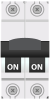
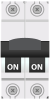
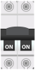

Tablero de Control
DIDÁCTICO

Parada de
emergencia
emergencia
Manual
Modo Manual
OFF
Modo Apagado
Automatico
Modo Automático
Selector de Modo de Operación
Encendido
Fallo de aire
Sobrecarga
Luz de Fallo de Aire
Luz de Sobrecarga
Apagado
Control de proceso
bloqueado
bloqueado
Válvula solenoide
Luz de Control de Proceso Bloqueado
Luz de Válvula Solenoide

 Breaker de Control 1
Breaker de Control 1
 
Breaker de Control 1

Breaker de Control 1
Breaker Principal de Control

Protector de Voltaje

 Relé 1
Relé 2
Relé 1
Relé 2
Contactor

 Relé Térmico
Relé Térmico
Modulo de caudal de lazo cerrado
Controlador
Controlador Electrónico
Breaker de Control 2
Proceso
 Bomba Centrifuga
Bomba Centrifuga
 Válvula Solenoide
Válvula Solenoide
Transmisor
 Válvula de Control
Válvula de Control
 Tanque
Tanque
 Placa Orificio
Placa Orificio
 Tubo Venturi
Tubo Venturi
Rotámetro
Presostato
 Convertidor I/P
Convertidor I/P
Interruptor de Emergencia

Interruptor de Emergencia
Tiempo Transcurrido: 0
Haga clic en un dispositivo del proceso para aprender más de él